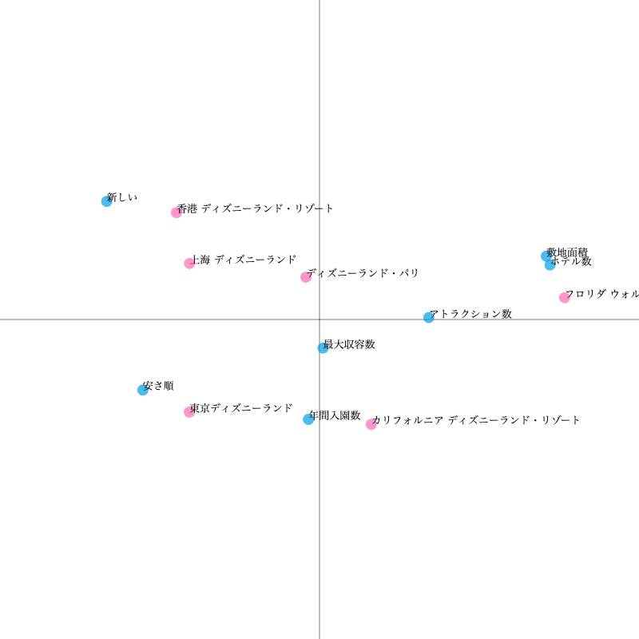
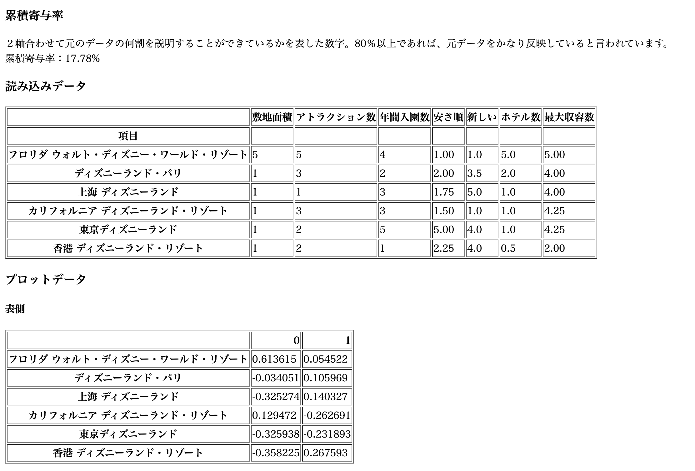

𝐴𝑠𝑠𝑖𝑔𝑛𝑚𝑒𝑛𝑡:
コレスポンデンス分析
1.散布図の画像
世界にあるディズニーリゾートで比較


2.クロス集計表のcsvファイル
csvファイル
3.説明
各国のディズニーリゾートを分析した結果の考察
・左上は開園日が新しい香港と上海がある。反対に右下は一番古いカリフォルニア ディズニーランド・リゾート
・右上はアトラクションと敷地面積が大きいウォルト・ディズニー・ワールド・リゾートがある。
・左下はチケット料金。最も安価なのは東京ディズニーリゾートである。反対に一番高価なのは、フロリダ ウォルト・ディズニー・ワールド・リゾート。
・右下は数値と散布図がなかなか合わなかった。
・アトラクション数や敷地面積が多いフロリダ ウォルト・ディズニー・ワールド・リゾートはチケット料金が高額であった。
・東京ディズニーランドではなくリゾートの括りにしているので、カリフォルニア ディズニーランド・リゾートより来場者数が多くなっている。
なかなか数値が散布図と合わなかったので数字を調整した。
累積寄与率：17.78%